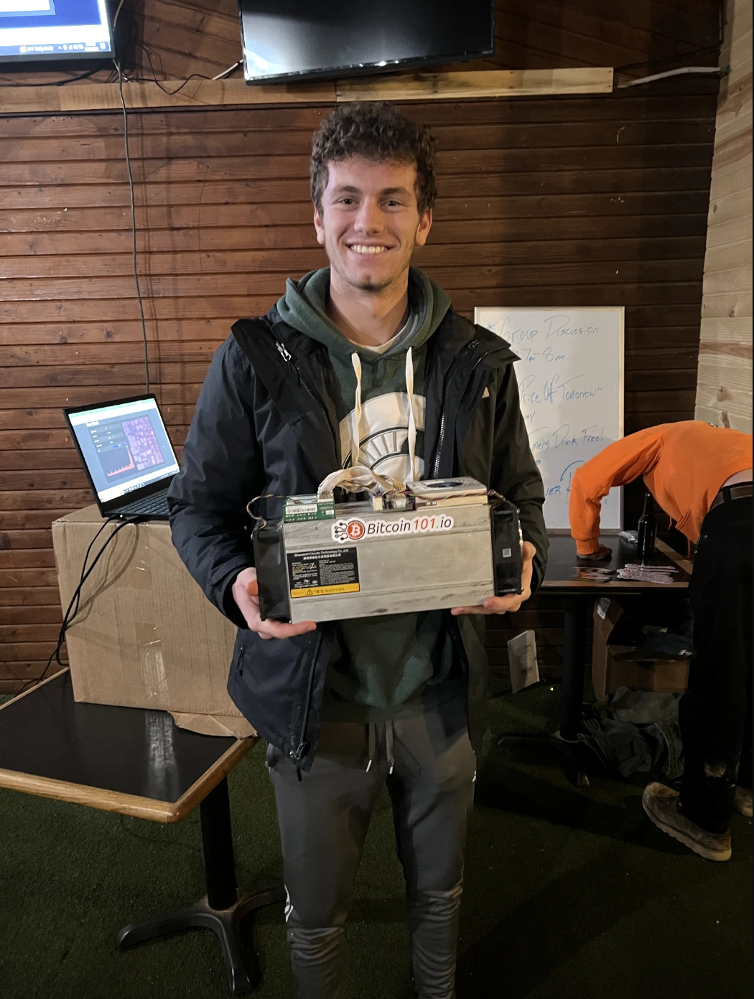

Who's the author?
Hello, my name is Blake Kaufman and welcome to my blog. You might be wondering who I am so here is a short list of my interests to help you get to know me better.
- Bitcoin: I am fascinated that we have been able to create a system of value outside of a centralized entity.
- Fitness: Staying active is a huge part of my life and allows me to push me in a way that is conditional solely on my effort alone.
- Coding: I love building things that can help people. Also, each project has its struggles and I love the feeling of completing hard tasks.
- Learning: Curiosity is what drives me. Whether it's curiosity about how far I can push my body(fitness), curiosity of how knowledgeable I can become on a topic(learning), I love understand things.
- Stargazing: The universe is unexplainably beautiful. When you look up to the stars, you cannot help but think about the endless possibilities that are out there.
Now, if I didn't give you a picture of what I looked like and you read that list you might think I was 45 years old. And yes, I have old hobbies, but that gives me an interesting perspective on ideas. Since I am young, 21 years old, I have less life context, giving me the ability to more clearly and less biasedly look at ideas. I hope you can appreciate the unique perspective I share while you read some of my posts.